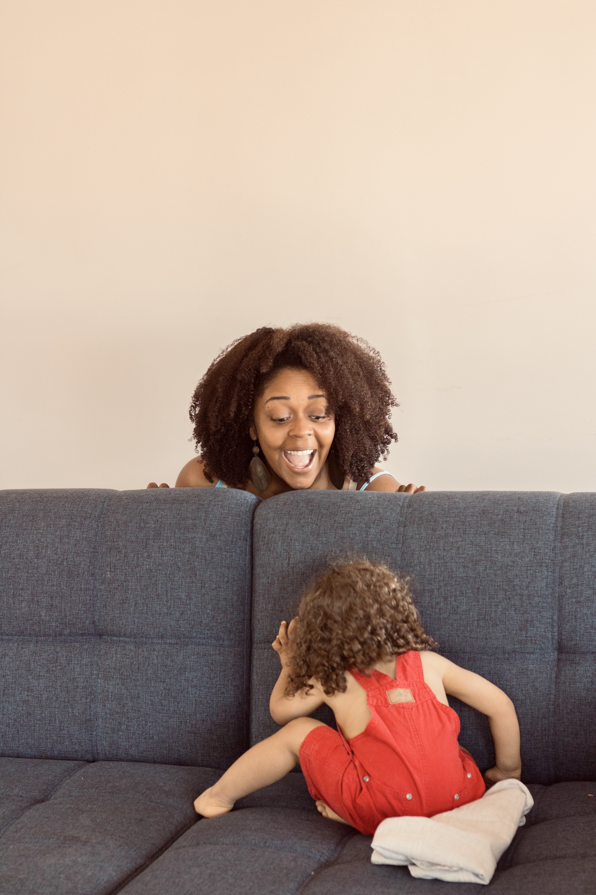
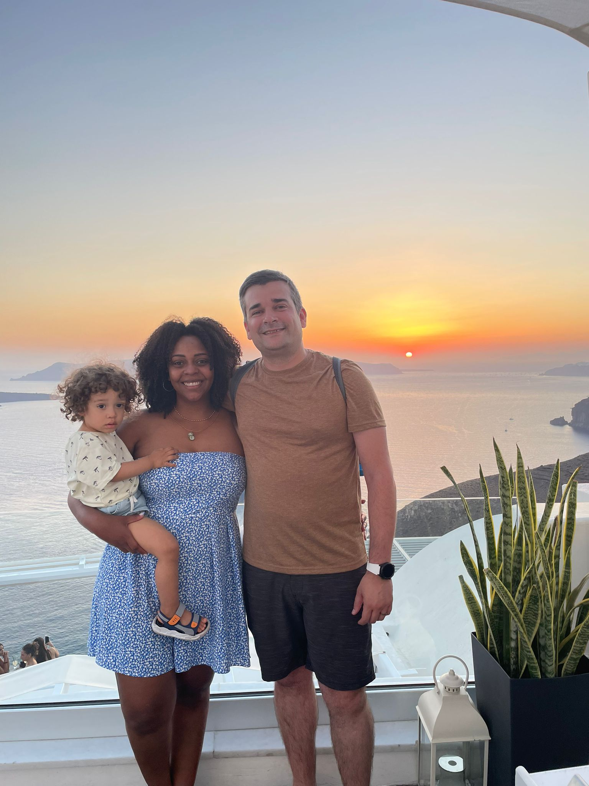
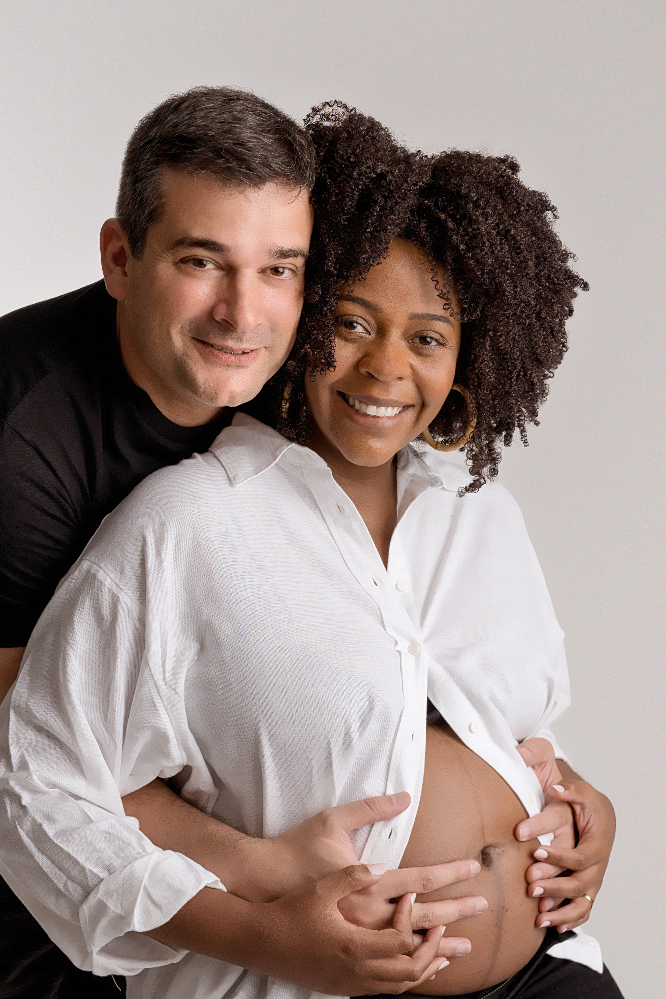
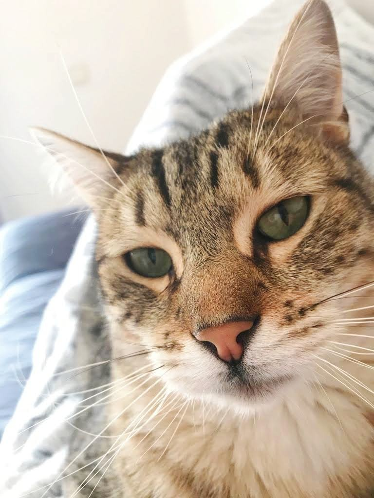

Olá, eu sou Apilly
Antes de qualquer adjetivo que possa me definir, sou mãe — e, sem dúvida,
a mãe mais feliz do mundo, embora também a mais cansada.
Aos 32 anos, tive o meu Miguel, que hoje tem 3 anos e transforma todos os
meus dias com a sua alegria contagiante, a sua energia inesgotável e a
forma leve como vê o mundo. Entre brincadeiras, músicas e muitas gargalhadas,
ele é a luz que dá sentido à minha rotina.
Sou brasileira, natural de Recife, capital do estado de Pernambuco,
no nordeste do Brasil. A vida trouxe-me até Ovar, onde construí a minha família
ao lado de um português vareiro, nascido e criado na cidade. Juntos partilhamos
a vida com o nosso gato, o Cid — um companheiro muito querido e, talvez, um pouco acima do peso.
Entre as raízes brasileiras e a vida em Portugal, carrego comigo histórias,
afetos e a certeza de que a felicidade mora nas pequenas coisas: no riso do meu
filho, no aconchego da família e nos momentos simples que tornam a vida
verdadeiramente especial.



